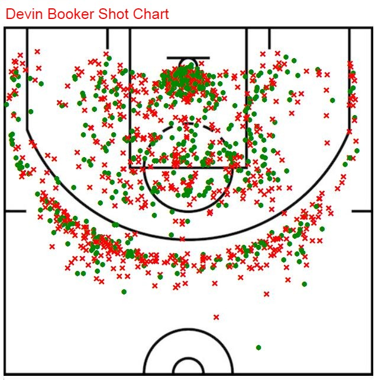

Blog
Image from StatMuse
Evolution of NBA Scoring
By Zach Hales, CoughGM on November 11, 2020Three-pointers and layups are becoming more and more common in the NBA. But the mid-range isn't dead yet!
In recent years, the three-point revolution has swept across the NBA. Started by the Warriors and Steph Curry and carried to the extreme by Mike D’Antoni, James Harden, and the Houston Rockets, the number of three-point attempts has been increasing over the last 20 years with no end in sight.
This has also led to a homogenization of NBA offenses and the disappearance of mid-range shots, as noted by Twitter user @owenlhjphillips:
how it started how it's going @dmorey edition pic.twitter.com/h4mxWFOUlR
— llewellyn jean (@owenlhjphillips) October 16, 2020
Here’s a closer look at the images:


In 2006-2007, the three-point shot was far less common, the mid-range shot was far more common, and there was more variety. In 2019-2020, almost every team’s shot chart looks the same, with all shots coming from three-point range and in the paint.
In a recent conversation with Kevin Hubbard, high school head coach in Casa Grande, Arizona, he told me “look at the shot volume... it's mainly lay-ups and 3s. It's almost like high school coaches should stop teaching kids to be ‘complete’ players and just let them shoot thousands of 3's each practice… The top teams have one dude and shooters.”
He’s got a point. Take the Rockets: James Harden surrounded by shooters like Eric Gordon, PJ Tucker, and Robert Covington. The Lakers have LeBron James and Anthony Davis surrounded by Danny Green, Kentavious Caldwell-Pope, Kyle Kuzma, etc. The best teams can surround their star talent with as much shooting as possible.
So for the kids that don’t possess elite athleticism, the “killer-instinct,” or mentality to be a primary scoring option, becoming an elite shooter is definitely a path to college or pro basketball that is more likely than becoming an all-star. After all, for every one “dude” there are three or four shooters. That's three or four times as many opportunities. But that’s a bit of a digression.
Back to the point: all of this is not to say that the mid-range is dead. Rather, I’d argue that the mid-range is not dead, and is, in fact, alive and well. Just… not in the same way as it used to be.
It’s clear that teams as a whole have reduced their mid-range volume. But this has mainly happened by taking mid-range shots away from role players, not stars players. Check out the shot profile of some role players from the 1990s, 2000s, and 2019-2020.
(Shot charts and stats are taken from Basketball-Reference, unless otherwise noted. Stats include regular season and playoffs and are rounded to the nearest whole number.)
Here’s Steve Kerr, a noted three-point shooter, from the 1996-1997 season.
Kerr is one of the best three-point shooters of all time. He took a lot of threes (51% of shots), to be sure, but even he took 42% of his shots as 2-point jump shots. His usage rate was 13% for the season and 14% for his career.
Let’s compare him to a similar player today: J.J. Redick.
And the numbers: 63% of shots were threes, and still a fair amount of 2-point jump shots, 25%. But substantially fewer. Also a noticable increase near the rim. His usage rate was 20% for the season and 20% for his career, a little higher than Kerr’s but both were used in basically the same way.
If you prefer someone with a little closer to Kerr’s usage, take a look at Landry Shamet.
By the numbers, 75% of his shots were threes and a nearly non-existent 7% were 2-point jump shots. Also a noticable increase near the rim. His usage was 13% for the season and 14% for his career, practically identical to Kerr.
How about Derek Fisher, starting point guard for the Lakers, from 2003-2004?
Fisher’s profile by the numbers: 32% of shots were threes and 47% were 2-point jump shots. His usage was 18% for the season and 16% for his career.
For a 2020 comparison to Fisher, D.J. Augustin has a pretty similar role.
By the numbers, 43% of shots were threes and 21% were 2-point jump shots, roughly half of Fisher's proportion. His usage rate is 19% for the season and 19% for his career, fairly similar to Fisher.
And here’s Bruce Bowen, a 3&D role player for the Spurs, from 2006-2007, the same year as the image from the tweet.
For Bowen, 52% of his shots were threes (the vast majority of which were from the corners) and 32% were 2-point jump shots. His usage rate was 11% for the season and about 11% for his career.
A 2020 comp for Bowen: P.J. Tucker.
71% of shots were threes (the vast majority of which were from the corners) and only 5% were 2-point jump shots. His usage rate was 9% for the season and 11% for his career, very similar to Bowen.
Twenty years ago, role players shot the mid-range. Today, they don’t. Those shots have been turned into threes and layups. Similar role players in 2020 vs 2007 shot far fewer 2-point jump shots and far more threes.
Great, but what about the star players? Let's go through the same exercise.
Obviously MJ loved the midrange. Here’s his shot chart from 1996-1997, prime Jordan.
He shot all over the court, but heavily (59%) with the 2-point jumpers. Only 15% of his shots were threes. 33% usage.
Everyone likes to compare Jordan and LeBron (CouchGM included), but in this case I don’t think it fits since they are stylistically pretty different. Jordan was more of a shooter and LeBron is more of a driver. Doc Rivers famously was fined for comparing Kawhi Leonard to Michael Jordan before Kawhi joined the Clippers. Let’s use Kawhi, since he's a closer stylistic match.

By the numbers: 37% of shots were 2-point jump shots and 28% were threes. Also greater volume at the rim. 33% usage.
Yes, a big drop in mid-range shooting between Kawhi and Jordan, but Jordan was extreme. And Kawhi still shoots nearly 40% of his shots from the mid-range, which is a large proportion.
Here’s prime Kobe from 2005-2006.

He also shot from everywhere on the court. 47% of his shots were 2-point jumpers and 24% were threes. 32% usage.
Devin Booker is a known Kobe admirer.
31% of shots were 2-point jumpers and 32% were threes. Pretty well-rounded, with roughly ⅓ of shots from all three levels. 30% usage.
Or, if you prefer a bigger name, how about Kevin Durant (2018-2019, since he didn’t play 2019-2020) for a Kobe comparison?
43% of shots are 2-point jumpers and 29% are threes. 29% usage (lower than usual while playing with the Warriors).
There’s a bigger difference between Kobe and Booker (still not huge), but Kobe and Durant are very similar.
One more 2000's star: Allen Iverson from 2000-2001.
Again, shots everywhere. 44% of his shots were 2-point jumpers and 18% were threes. 36% usage.
How about Kyrie Irving (also 2018-2019, since he only played 20 games in 2019-2020) for Allen Iverson?
Shots everywhere. 27% of shots were 2-point jump shots and 35% were threes. 30% usage.
A pretty big decrease, again. But Kyrie’s mid-range shots still account for greater than ¼ of his total shots.
If you’d like to see a few other 2020 high-usage players, here’s Donovan Mitchell…
...with 25% of shots as 2-point jump shots and 35% as threes, and Bradley Beal…

…25% of shots as 2-point jump shots and 37% as threes.
So, yes, there has definitely been a decrease in mid-range shooting, even among the stars. However, the difference is much less drastic for high-usage star players than for role-players. Plenty of star players still shoot in the neighborhood of ¼ to ⅓ of their shots from the mid-range, but the shot has been all but eliminated from the role player’s shot diet, with ¾ of their shots being threes.
The purpose of adding so much three-point shooting around the star players is to allow these dudes to go to work in space. And often the space they like is the mid-range.
Case in point: as Kawhi Leonard transitioned from role-player to star-player, he was granted more freedom to shoot in the mid-range. The following charts include stats for the regular season only.
His 2-point jump shot attempt rate increases with his usage rate. His three-point rate stayed relatively flat, but he came into the league as a poor three-point shooter. So he probably didn’t shoot as many at the beginning of his career as he otherwise would have.
But now that he's firmly in star territory, he shoots more 2-point jump shots than threes.
We see similar trends in reverse for Vince Carter. He was a star early in his career and he lasted 20 years in the league by successfully transitioning to a role player later. As he did so, he shot fewer 2-point jumpers and more threes.
Over time, his usage rate decreases and so does his 2-point jump shot rate. As that happens, his three-point attempt rate goes way up.
So, sure, the mid-range isn’t used nearly as frequently overall as it used to be. But this is mostly due to the elimination of the mid-range from the shot diet of role players and the rise of three-point specialists.
The dudes still shoot from the mid-range frequently.
And as CouchGM has previously noted, the mid-range becomes even more important in the clutch.
One final closing thought: examining shot charts can help identify players with star potential. Who shoots from everywhere and does so well? As an example, take Tyler Herro (second shot chart via StatMuse):
Tyler Herro has the shot profile of a dude-in-the-making. A lot of his shots are still threes (47% threes vs 29% 2-point jumpers). But he still shoots from everywhere on the floor and does so with average or better efficiency from almost all locations. As he gets gains experience (and as Jimmy Butler gets older), his role will grow. I expect that he’ll shoot more mid-range shots, just like we saw with Kawhi. Given his strong performance during the 2020 playoffs, I’d bet on Herro becoming an all-star soon.
back to blogRecent Posts

NBA Draft 101
By Zach Hales, CouchGM on September 11, 2020In this new Intro to the NBA Draft series, CouchGM teaches NBA Draft 101 on the basics of team-building through the NBA Draft and which skills to prioritze when evaluating prospective NBA players.
Read More